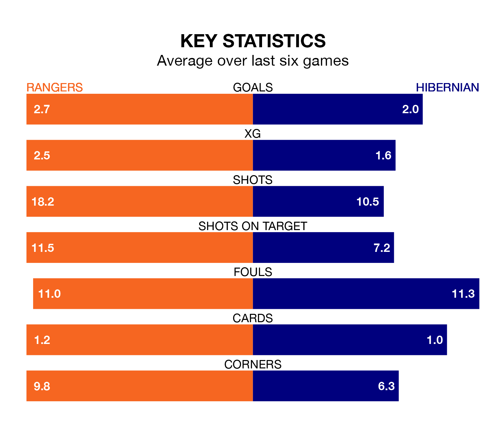

Rangers host Hibernian in Saturday's match at the Ibrox Stadium looking to bounce back from defeat last time out in the Premiership.
Rangers, who sit second in the league after 29 games, fell to a 2-1 home defeat to Motherwell on March 2.
They face a Hibernian side who picked up a win in their last match, a 3-0 victory against Livingston, and who sit sixth in the table.
With 64 goals in 29 games so far this season, Rangers are the league's second-highest scorers with 2.2 goals per game. And they are conceding fewer than average, letting in 16 goals at a rate of 0.6 per game.
Hibernian are also above average scorers, with 1.4 goals per game, compared to a league average of 1.3. They have conceded 1.5 goals per game.
With Jack Butland between the sticks, the home side can rely on one of the league's safest pair of hands. He has kept 17 clean sheets in his 29 appearances this season, and no 'keeper has prevented the opposition scoring more often in the Premiership.
In Hibs's net, David Marshall has nine clean sheets in 29 games. He has conceded a goal every 68 minutes, more than twice as often as the 163 minutes between goals for Butland.
In the last 10 years, Rangers and Hibernian have played each other on 36 occasions. Rangers won 22 of them, Hibernian eight, and they drew six times.
On average, Rangers scored 2.1 goals and Hibs 1.3 in those matches.
Their last meeting was on March 10, when Rangers won 2-0 away.
Rangers are in fantastic form in the Premiership, with five wins and one loss from their last six games.
With three wins and three draws over that period, the visitors' form is worse – they have taken 12 points from 18, compared to Rangers's 15.
Updated: 12:39 (UTC), 26/03/24